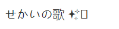
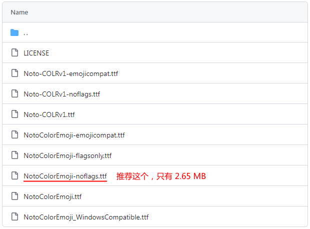
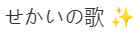

# 引入
众所周知，Emoji 不能在 Win7 等老系统上正常显示：
目前已有 Twemoji Everywhere 等 Chrome 浏览器插件可以解决该问题。但它们都是以图片覆盖原字符而实现的。图片毕竟是图片，始终没有真正的 Emoji 字符爽。
这里是我无意中发现的一个特性？？？ 可以让 Win7 等老系统通过 Chrome 浏览器显示真正的 Emoji 字符。
# 准备
Chrome 浏览器 （Chrome 内核的应该都可以，Chrome 101 测试成功）篡改猴 浏览器扩展
NotoColorEmoji 字体
下载地址： github.com/ （推荐下 Noto-COLRv1-noflags.ttf）
# 开始
这里是一个小小的测试，看看你的浏览器是否支持这种方法。下载地址： demo.7z/
首先打开 Github 链接（打不开的找镜像）下载字体。

其他的版本比较大，需要的请自行下载。
接着就是 ttf 字体转 base64 （推荐先把 ttf 转成 woff2，这样更小一点）
不太好意思直接贴别人的工具链接，大家可以自行搜索这几种工具。都有在线版的。
转好后会得到这样的东西：data:application/octet-stream;base64, ...
这就是之前为什么要限制文件大小的原因
然后是最关键的油猴脚本编写。
这里是基本框架：
这个脚本将会在所有页面上执行，将 CSS 样式注入页面，达到修改页面字体为 NotoColorEmoji 的效果。
当然可以对这段代码稍加修改，将 NotoColorEmoji 字体追加到原始字体后，从而最大程度保持网站原始字体。
# 效果
如下，注意，在浏览器中它是字符不是图片哦。
# 总结
此方法的关键在于将 NotoColorEmoji 字体注入页面，从而在老系统的 Chrome 浏览器中显示 Emoji 字符。灵感源于百度翻译（想不到吧）优点
缺点
备注
以上就是这次分享的全部内容，如有错误，欢迎指出，谢谢大家！